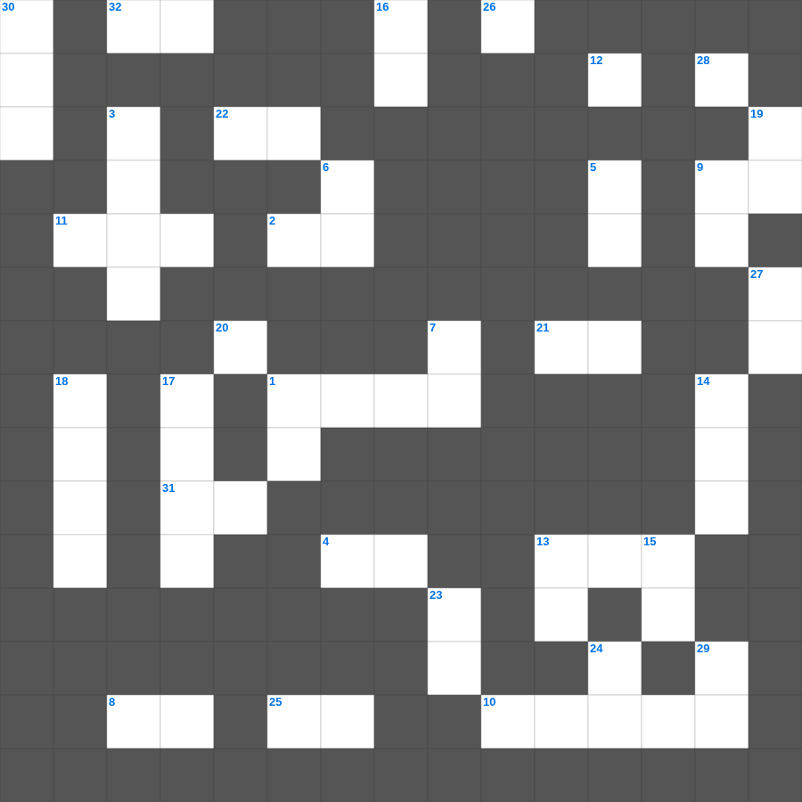

잠언 마스터 100 (1/2)
📌 서비스 정의
십자가로세로는 교회 주보와 주일학교에서 사용할 수 있는 성경 기반 가로세로 퍼즐 서비스입니다. 성경 인물, 사건, 핵심 구절을 바탕으로 제작되었습니다. 온라인 풀이 및 인쇄 기능을 제공합니다.
📖 잠언란?
잠언은 솔로몬을 중심으로 기록된 지혜의 말씀 모음으로, 일상생활과 인간관계, 신앙생활에 적용할 수 있는 실천적 교훈을 담고 있습니다.
📚 잠언의 주요 사건·주제
지혜의 근본은 여호와를 경외함 · 지혜와 우매를 대조하는 교훈 · 현숙한 여인에 대한 교훈 · 왕과 통치자를 향한 교훈 · 일상의 처세에 관한 잠언들
잠언를 주제로 한 잠언 주일학교 퀴즈입니다. 35개의 단어를 맞춰보세요! 가로세로 낱말 퍼즐 형식으로 잠언의 핵심 내용을 재미있게 복습할 수 있습니다.

📝 가로 힌트
1. 물에 빠진 도끼날을 떠오르게 하려고 엘리사가 던진 것
2. 요나가 밤낮 이것을 물고기 배 속에 있으니라
4. 아리마대 사람 요셉이 빌라도에게 당돌히 들어가 예수의 이것을 달라 하니
8. 형제들아 너희는 선을 행하다가 이것하지 말라
9. 야고보는 누구의 형제로 알려져 있나
10. 열 가지 재앙 중 마지막 재앙
11. 죽으면 죽으리이다 고백한 왕후
12. 화 있을진저 이것의 성이여 그 안에는 거짓이 가득하고 포악이 가득하며 탈취가 떠나지 아니하는도다
13. 에브라임은 어리석은 이것 같이 분별력이 없어서 애굽을 향하여 부르짖으며 앗수르로 가는도다
20. 너희가 알 것은 죄인을 미혹된 길에서 돌아서게 하는 자가 그의 영혼을 사망에서 구원할 것이며 허다한 이것을 덮을 것임이라
21. 먹을 수 있는 정한 짐승 중 하나
22. 베드로전서 2장 24절: 친히 나무에 달려 그 몸으로 우리 죄를 이것하셨으니
25. 성벽 공사 중 한 손에는 연장을, 다른 손에는 무엇을 들었나
26. 가인이 아벨을 죽인 도구(전통적 해석)
28. 아모스 5:4, '너희는 나를 찾으라 그리하면 이것리라'
31. 룻이 베들레헴에 도착한 시기 '이것 추수 시작할 때'
32. 여호와여 내가 주께 대한 소문을 듣고 놀랐나이다 주는 주의 일을 이 수년 내에 이것하게 하옵소서
📝 세로 힌트
1. 자기의 불법으로 말미암아 책망을 받되 말하지 못하는 이 짐승이 사람의 소리로 말하여 이 선지자의 미친 행동을 저지하였느니라
3. 예루살렘 양문 곁에 있는, 서른여덟 해 된 병자가 누워 있던 못의 이름
5. 사람들이 자기를 사랑하며 돈을 사랑하며 자랑하며 교만하며 비방하며 이것을 거역하며
6. 시체를 만진 자는 며칠 동안 부정합니까
7. 보아스가 룻에게 베푼 친절 '다른 밭으로 이것 말며'
9. 솔로몬의 지혜를 듣기 위해 천하의 왕들이 보낸 것
13. 그들은 이성 없는 짐승 같아서 그 본능으로 잡혀 죽기 위하여 난 것 같으니 그 알지 못하는 것을 이것하고
14. 하박국이 기쁨의 근거로 삼은 분
15. 스바냐 3:17에 나타난 하나님의 감정
16. 가나안 땅에 들어가면 그 땅의 이것을 다 타파하라
17. 하나님이 호세아에게 고멜을 다시 데려올 때 지불하게 하신 것
18. 모세의 묘진을 아는 자가 오늘까지 이것
19. 죄인 중에 내가 이것니라
23. 하나님은 한 분이시요 또 하나님과 사람 사이에 이것자도 한 분이시니 곧 사람이신 그리스도 예수라
24. 너희는 악을 미워하고 선을 사랑하며 성문에서 이것을 세울지어다
27. 에스라가 예루살렘에 도착해서 들은 충격적인 소식 '백성들이 이것함'
29. 오직 의인은 이것으로 말미암아 살리라
30. 여호와의 말씀이니라 보라 날이 이르리니 내가 이스라엘 집과 유다 집에 이것을 맺으리라
🧩 이 퍼즐에서 배우는 내용
이 퍼즐은 잠언 마스터 100 (1/2)의 핵심 단어와 개념을 자연스럽게 복습할 수 있도록 구성되었습니다. 주일학교 수업이나 개인 성경공부에서 학습 내용을 점검하는 용도로 바로 활용할 수 있습니다.
🧑🏫 교회 교육 자료 활용
이 퍼즐은 주일학교 교재 추천 자료로 활용할 수 있고, 주일학교 주보에 넣기 좋은 분량으로 구성되어 있습니다. 수업용 주일학교 교안에 활동지로 붙이거나, 예배 후 복습용 주일학교 공과교재로 바로 사용할 수 있습니다.
🏷️ 키워드
잠언 주일학교 퀴즈, 잠언, 십자가로세로, 성경퀴즈, 말씀퀴즈, 가로세로퍼즐, 주일학교 교재 추천, 주일학교 주보, 주일학교 교안, 주일학교 공과교재